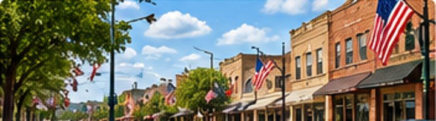
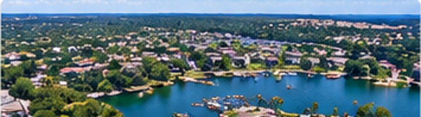
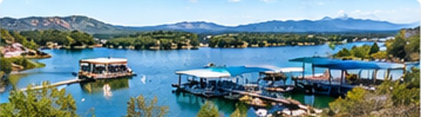

LOCAL MUSIC
FIESTAJAM'S BIG AMBITION: MAKE MARBLE FALLS A SONGWRITER DESTINATION
Organizers want to build a stronger year-round music community.
READ FULL STORY →Jerry LeBlanc shares how assistive technology supports his work at an animal rescue.
READ FULL STORY ›The community mourns a veteran officer who served the department for a decade.
READ FULL STORY ›The Yellowjackets enter the November 13 postseason matchup.
READ FULL STORY ›Checking for local headlines…
Live radar and NWS watches, warnings and advisories. City labels appear when you zoom in; the right-hand alert panel stays visible.
Six different Highland Lakes stories • November 13, 2026 edition
Organizers want to build a stronger year-round music community.
READ FULL STORY →The Spazmatics and a Turnpike tribute act feature on the weekend calendar.
READ FULL STORY →A Commemorative Air Force event brings vintage atmosphere to the weekend.
READ FULL STORY →Seasonal attractions remain among the region's weekend options.
READ FULL STORY →Residents can recognize favorite businesses and community destinations.
READ FULL STORY →Family artifacts and historical records will tell stories of early settlers.
READ FULL STORY →Explore the places, history and natural wonders of Central Texas. Each feature is an original Highland Lakes Live article.
Before Lake Buchanan filled, Bluffton was a Colorado River community. Discover the history of the old settlement and the stories that sometimes reappear when the water recedes.
Read full story →A rocky swimming cove at Inks Lake State Park combines striking geology, Hill Country scenery and a memorable name.
Read full story →The city’s name reaches back to river rapids and a rock that early observers thought resembled marble.
Read full story →From underground geology to New Deal-era improvements, Longhorn Cavern is one of the Hill Country’s most unusual landmarks.
Read full story →A lakeside development grew into a recognized Hill Country destination with golf, boating and residential neighborhoods.
Read full story →Explore the granite dome’s extraordinary geology, cultural significance and long-standing place in Hill Country storytelling.
Read full story →Timeless local guides and original features to help you explore the region.
Discover how changing weather shapes the landscape and the best ways to enjoy the region.
Read the feature →
Explore the character of Main Street, local stops and the community's downtown heritage.
Read the feature →Plan a relaxed road trip through lakeside communities and the surrounding countryside.
Read the feature →Useful local reading for residents and visitors planning time around the lakes.

Get to know this lakeside resort community, its setting and what makes it distinctive.
Read the guide →
Learn about boating and ways to enjoy one of the Highland Lakes' best-known destinations.
Read the guide →Make the most of an evening by the water with ideas for a memorable lakeside outing.
Read the guide →Explore local directory listings and clearly labeled sponsorship opportunities.
Active Texas tornado, severe thunderstorm and flash flood warnings from the National Weather Service.